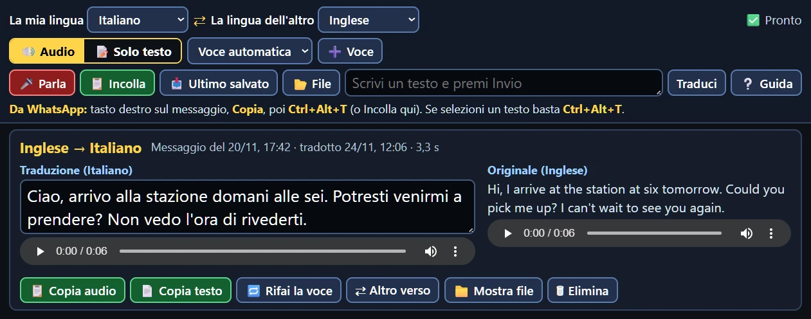
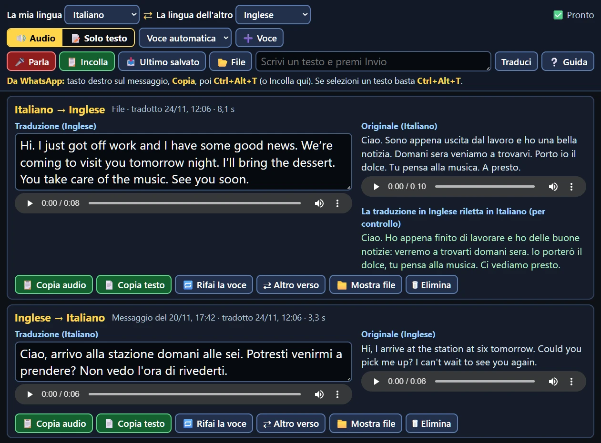
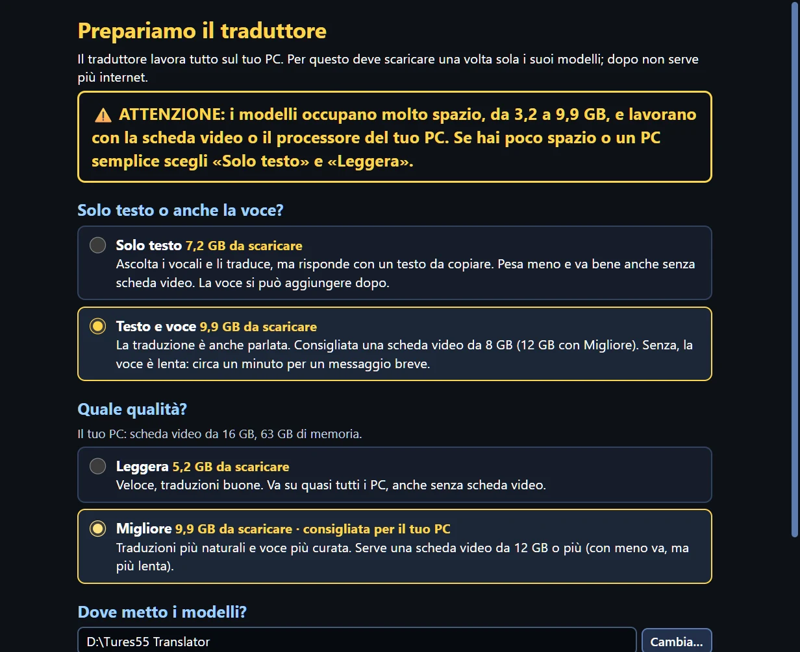

Gratuito · Windows 10 e 11 · tutto sul tuo PC
Parla la tua lingua.
Ti sentono nella loro.
Tures55 Translator traduce i vocali e i messaggi scritti di WhatsApp, Telegram ed email. E quando rispondi, la traduzione esce con la tua voce.
Hai detto · Italiano
Ciao! Sono appena uscita dal lavoro e ho una bella notizia: domani sera veniamo a trovarvi. Porto io il dolce, tu pensa alla musica. A presto!
Sente · Inglese
Hi. I just got off work and I have some good news. We’re coming to visit you tomorrow evening. I’ll bring the dessert. You take care of the music. See you soon.
Ascolta
Una voce sola, dieci lingue.
Scegli una lingua: senti lo stesso messaggio tradotto, con il timbro di chi lo ha registrato. Sono traduzioni vere del programma, fatte partendo da una voce creata al computer.
Il messaggio originale · Italiano
Ciao! Sono appena uscita dal lavoro e ho una bella notizia: domani sera veniamo a trovarvi. Porto io il dolce, tu pensa alla musica. A presto!
La traduzione · Inglese
Hi. I just got off work and I have some good news. We’re coming to visit you tomorrow evening. I’ll bring the dessert. You take care of the music. See you soon.
Ricevi
Copia il messaggio, leggilo e ascoltalo.
- Copia. In WhatsApp, tasto destro sul messaggio (vocale o scritto) e «Copia».
- Incolla. Nel traduttore premi «Incolla», oppure Ctrl + Alt + T da qualsiasi programma.
- Fatto. Capisce da solo in che lingua è, lo traduce e, se vuoi, te lo legge.
Va bene anche un file audio trascinato nella finestra, per Telegram, le email e tutto quello che si può copiare.

Il vocale ricevuto, in inglese
Quello che senti tu, in italiano
Rispondi
La risposta ha la tua voce.
Premi «Parla» e di' il messaggio nella tua lingua, oppure scrivilo. Il traduttore lo dice nell'altra lingua con la tua voce. Premi «Copia audio», vai nella chat e incolla.
- Rilettura di controllo: la traduzione torna nella tua lingua, così vedi se il senso è giusto
- Puoi correggere il testo e rifare la voce
- Solo testo: un interruttore, quando la voce non serve

Privato
I tuoi messaggi restano a casa tua.
Ascolto, traduzione e voce lavorano dentro il tuo PC. Internet serve solo per scaricare i modelli la prima volta e gli aggiornamenti.
- 0messaggi mandati su internet
- 0account da creare
- 5-11 sper un messaggio con la voce, su una scheda RTX
Lingue
Venti lingue, in ogni combinazione.
Testo e voce
- Italiano
- Inglese
- Spagnolo
- Francese
- Tedesco
- Portoghese
- Russo
- Cinese
- Giapponese
- Coreano
Solo testo
- Olandese
- Polacco
- Ceco
- Turco
- Indonesiano
- Vietnamita
- Arabo
- Persiano
- Hindi
- Thailandese
Nelle lingue «solo testo» i vocali si ascoltano e si traducono lo stesso: la risposta è scritta. Le scritte del programma sono in italiano, inglese, spagnolo, francese, tedesco e portoghese.
Cosa serve
Guarda prima quanto spazio hai.
Il programma è piccolo, ma alla prima apertura scarica i modelli con cui lavora. Scegli tu quali, prima di scaricare.
| Solo testo | Testo e voce | |
|---|---|---|
| Leggera | 3,2 GB | 5,2 GB |
| Migliore | 7,2 GB | 9,9 GB |
| Il PC | Va bene anche senza scheda video | Consigliata una scheda video da 8 GB (Migliore: 12 GB). Senza, la voce ci mette circa un minuto |
Poco spazio o un PC semplice? «Solo testo» e «Leggera»: la voce si aggiunge dopo. Provato su NVIDIA RTX 5070 Ti, RTX 3060 e sul solo processore; non ancora su schede AMD e Intel.
Scarica
Tre passi e parli.
- Scarica il file
Tures55-Translator-Setup.exe. - Aprilo. Se Windows mostra «Windows ha protetto il PC», clicca «Ulteriori informazioni» e poi «Esegui comunque». Succede con i programmi che non hanno una firma digitale a pagamento, come questo.
- Scegli testo o voce e la qualità: il programma ti dice quale va meglio per il tuo PC. Poi si aggiorna da solo.

Guarda come funziona
La guida in video, in meno di 4 minuti
Dall'installazione alla prima risposta con la tua voce, un passo alla volta.
Versione breve (1 minuto) →Il video si carica da YouTube solo quando premi play.
Sostenitori
Gratuito per tutti.
Codice aperto per chi lo sostiene.
Tures55 Translator è gratuito, senza limiti e senza funzioni bloccate. Se ti è utile, una donazione è il modo più bello per dire grazie e aiutarlo a crescere. Come ringraziamento ricevi:
Sostieni su Buy Me a CoffeeIl codice completo e aperto del programma, da studiare e modificare per uso personale.
Il tuo nome tra i sostenitori del progetto. Se preferisci, puoi restare anonimo.
Un codice sostenitore, che ti arriva per email: incollato nel programma, spegne l'invito alla donazione.
Il codice dei sostenitori non si può distribuire, né originale né modificato. Per far conoscere il programma condividi questa pagina.
Domande frequenti
È davvero gratuito?
Sì, per uso personale. Niente pubblicità, niente abbonamenti e nessuna funzione bloccata. Una volta a ogni accensione di Windows può comparire un piccolo invito alla donazione, che si chiude con «Più tardi».
È collegato a WhatsApp?
No. Tures55 Translator non è fatto da WhatsApp o Meta, né è collegato a loro. Lavora su quello che copi tu, e non entra nel tuo account.
Le traduzioni sono sempre giuste?
No: sono automatiche e possono contenere errori, soprattutto in giapponese e coreano. Per questo c'è la rilettura di controllo, e puoi correggere il testo prima di mandarlo.
Posso usare la voce di un'altra persona?
Solo se ti ha dato il permesso. E di' a chi ascolta che la voce è stata fatta al computer.
Funziona sul telefono?
No, è un programma per Windows. Sul PC si usa con WhatsApp per Windows e con qualsiasi programma da cui si può copiare.
Dove finiscono i miei messaggi?
In una cartella del tuo PC. Dal programma li puoi cancellare uno per uno oppure tutti insieme.
Come si disinstalla?
Come ogni programma: Impostazioni di Windows, App, App installate, Tures55 Translator, Disinstalla.